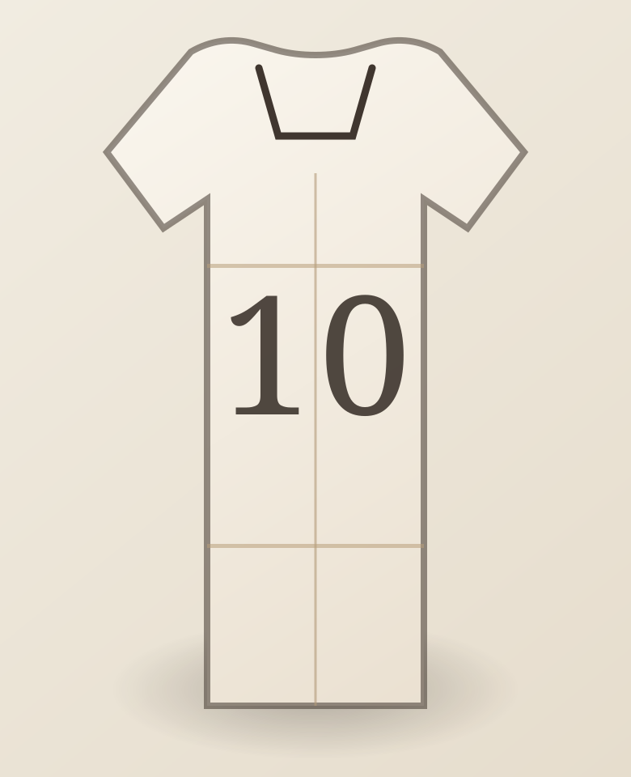

Permanent Collection · Since 1930
Shirts that carry the memory of football.
This is not a product feed. This is a curated archive where each shirt is treated as a symbolic object, tied to legendary players, decisive finals, iconic numbers, and moments that shaped the game.

The archive exists to preserve football memory in wearable form.
Every chapter on this homepage reveals a different layer of legacy: icons, finals, numbers, turning points, and rare pieces. We curate shirts as historical evidence, cultural storytelling, and collectible heritage.
Chapter I
Legends
Revered shirts worn by players whose names became eras.
Chapter II
Eternal Finals
Shirts linked to nights that still live in collective memory.
Chapter III
Immortal Numbers
Mythic digits that grew into football language.
Creative sovereignty
The pure finisher
Charisma and ambition
Last guardian of destiny
Chapter IV
Jerseys That Made History
Turning points, milestones, and unforgettable football narratives.
Chapter V
Iconic Drops
Select pieces with cult status, rarity, and collector gravity.
Featured Story
The Shirt That Silenced the Century
Vienna, 1995. A young Ajax side rewrote European hierarchy with a shirt that embodied fearless structure, positional poetry, and a generation before its time. This exhibit honors the moment football looked forward by trusting youth.
Read Full StoryCurated Selection